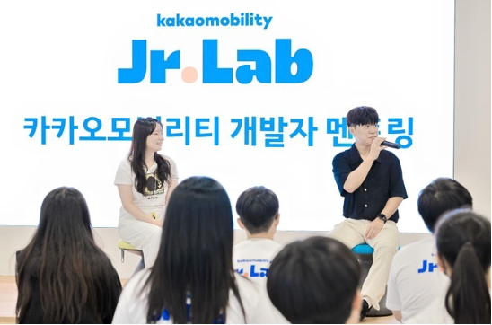

카카오모빌리티가 택시기사 청소년 자녀 대상의 코딩 교육 프로그램인 ‘주니어랩'을 성황리에 마무리했다. ‘주니어랩'은 카카오모빌리티가 기금을 마련하고 사회복지법인인 ‘아이들과미래재단’과 공동 운영한 사회공헌 교육 프로그램으로, 택시기사 청소년 자녀들의 성장 지원 및 업계와의 지속적인 상생 실천을 위해 마련됐다. ▲스마트 모빌리티를 주제로 한 코딩 교육 ▲카카오모빌리티 미래이동연구소인 ‘네모개러지’ 현장학습 ▲카카오모빌리티 개발자와의 멘토링 프로그램 등 모빌리티에 대한 이해와 흥미를 높일 수 있는 다양한 교육 프로그램을 진행했으며, 총 23명의 학생들이 지난 달 19일부터 여름방학 기간 동안 약 한 달 여의 과정에 참여한 바 있다. 카카오모빌리티는 지난 19일 카카오모빌리티 판교 사옥에서 수료식을 개최하고, 주니어랩 프로그램을 성공적으로 이수한 학생들을 초청해 ▲수료증 ▲교육 종료 후에도 코딩 학습을 이어갈 수 있는 코딩학습 교구 ▲ 주니어랩 굿즈 등을 수여했다. 또한 코딩 교육 과제 결과물을 함께 공유하는 자리도 마련됐다. ‘자동으로 따라오는 스마트 쇼핑카트’, ‘나쁜 사람만을 쫓는 몸통박치기 드론’ 등 주니어랩 수료생들만의 창의적인 코딩 결과물은 카카오모빌리티 사내 전시를 통해 공개돼 카카오모빌리티 직원들의 응원 메시지도 함께 받았다. 이 외에도 멘토링 세션을 통해 카카오모빌리티 개발자들과의 질의응답 시간을 함께 운영했다. 현장에 참여한 학생들은 주니어랩 현장학습 프로그램에서 만난 모바일 주행로봇, 자율주행 등 미래 모빌리티 기술 개발에 대한 호기심을 피력하고, 개발자로서 갖춰야 할 필수 역량 등 다양한 질문들을 이어나갔다. 카카오모빌리티 주니어랩에 참여한 이모 학생은 “주니어랩 일원으로 참여해 새로운 친구들과 협업하며 코딩 작품을 완성하게 돼 기쁘고, 뜻깊은 여름 방학을 보낸 것 같아 성취감을 느낀다"고 소감을 전했다. 또 자녀와 함께 수료식에 참석한 카카오 T 벤티 기사 정모 크루는 “평소 아이에게 다양한 경험을 제공하고자 많은 고민을 해왔는데, 모빌리티 IT 기술 개발이라는 생생한 현장 체험과 교육 프로그램은 값진 선물이 됐다. 카카오모빌리티와 진정한 파트너가 된 것 같다”고 말했다.
